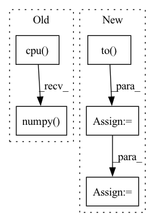

Pattern ID :23648
Before Change
model.zero_grad()
pred = model(
torch.autograd.Variable(batch).to(device), lengths.cpu().numpy()
) //// perform forward pass
pred = torch.squeeze(pred)
loss = criterion(
pred.to(device), torch.autograd.Variable(targets.float()).to(device)After Change
model.zero_grad()
//// perform forward pass
pred = model(
sent1.to(device),
sent2.to(device),
sents1_len.to(device),
sents2_len.to( device) ,
)
//// compute loss
loss = criterion(
pred.to(device), torch.autograd.Variable(targets.float()).to(device)
)
//// perform backward pass
loss.backward()
//// update weights
optimizer.step()
//// accumulate targets from batch
y_true += list(targets.float().numpy())
//// accumulate preds from batch
y_pred += list(pred.data.float().detach().cpu().numpy())
//// accumulate train loss
total_loss += lossIn pattern: SUPERPATTERN
Frequency: 4
Non-data size: 5
Instances Fragment ID: 73851366
Project Name: shahrukhx01/siamese-nn-semantic-text-similarity
Commit Name: f3d054dd14ef532c408b1306c3341115777ac22f
Time: 2021-12-30
Author: sk28671@gmail.com
File Name: siamese_sts/trainer/train.py
M Class Name: AnonimousClass
N Class Name: AnonimousClass
M Method Name: train_model(6)
N Method Name: train_model(6)
M Parent Class:
N Parent Class:
M File Name: siamese_sts/trainer/train.py
N File Name: siamese_sts/trainer/train.py
M Start Line: 16
M End Line: 47
N Start Line: 16
N End Line: 59
Before Change
out = model(target_img_tensor)
// ps = torch.exp(out)
ps = out
prediction_percentages = (ps.cpu().numpy() [0]).tolist()
pred = prediction_percentages.index(max(prediction_percentages))
pred_labels.append(pred)
show_roc(true_labels, pred_labels, auc=auc, figure_size=figure_size)After Change
target_data_loader = torch.utils.data.DataLoader(target_data_set,batch_size=10,shuffle=False)
for i, (imgs, labels) in enumerate(target_data_loader):
imgs = imgs.to( device)
labels = labels.to(device)
true_labels.append(labels.tolist())
with torch.no_grad():
model.eval()
out = model(imgs)
// ps = torch.exp(out)
ps = out
print(ps.shape) Fragment ID: 73851335
Project Name: radtorch/radtorch
Commit Name: 74b5ef917af3aebdf033166bf8b81cbc9ceb9b6e
Time: 2020-03-01
Author: elbanan@users.noreply.github.com
File Name: radtorch/visutils.py
M Class Name: AnonimousClass
N Class Name: AnonimousClass
M Method Name: show_nn_roc(5)
N Method Name: show_nn_roc(5)
M Parent Class:
N Parent Class:
M File Name: radtorch/visutils.py
N File Name: radtorch/visutils.py
M Start Line: 199
M End Line: 216
N Start Line: 201
N End Line: 215
Before Change
batch_size, seq_len, vocab_size = logits.size()
mask_positions_after_reshaped = []
for batch, mask_pos in enumerate(mask_positions.detach().cpu().numpy() .tolist()):
for pos in mask_pos:
mask_positions_after_reshaped.append(batch * seq_len + pos)
After Change
single_mask_logits = single_logits[single_mask_positions] // (mask_label_num, vocab_size)
single_mask_logits = single_mask_logits.repeat(len(single_sub_mask_labels), 1, 1) // (sub_label_num, mask_label_num, vocab_size)
single_mask_logits = single_mask_logits.reshape(-1, vocab_size) // (sub_label_num * mask_label_num, vocab_size)
single_sub_mask_labels = torch.LongTensor(single_sub_mask_labels).to( device) // (sub_label_num, mask_label_num)
single_sub_mask_labels = single_sub_mask_labels.reshape(-1, 1).squeeze() // (sub_label_num * mask_label_num)
cur_loss = cross_entropy_criterion(single_mask_logits, single_sub_mask_labels)
cur_loss = cur_loss / len(single_sub_mask_labels)
if not loss:
loss = cur_loss
else: Fragment ID: 73851236
Project Name: harderthenharder/transformers_tasks
Commit Name: bf825bb22c43795f1e3a08cf8969ddc613051e76
Time: 2022-11-30
Author: pankeyu@pankeyus-MacBook-Pro.local
File Name: prompt_tasks/p-tuning/utils.py
M Class Name: AnonimousClass
N Class Name: AnonimousClass
M Method Name: mlm_loss(6)
N Method Name: mlm_loss(6)
M Parent Class:
N Parent Class:
M File Name: prompt_tasks/p-tuning/utils.py
N File Name: prompt_tasks/p-tuning/utils.py
M Start Line: 204
M End Line: 212
N Start Line: 190
N End Line: 203
Before Change
// Cal PSNR
total_psnr += 10. * torch.log10(1. / torch.mean((sr_tensor_y - lr_tensor_y) ** 2))
sr_image_y = sr_tensor_y.mul_(255.0).cpu().squeeze_(0).squeeze_(0).numpy()
sr_image = np.array([sr_image_y, lr_ycbcr[..., 1], lr_ycbcr[..., 2]]).transpose([1, 2, 0])
sr_image = np.clip(imgproc.convert_ycbcr_to_rgb(sr_image), 0.0, 255.0).astype(np.uint8)
sr_image = Image.fromarray(sr_image)
sr_image.save(sr_image_path)After Change
hr_ycbcr = imgproc.convert_rgb_to_ycbcr(hr_image)
hr_y_image = hr_ycbcr[..., 0]
hr_y_image /= 255.
hr_y_tensor = torch.from_numpy(hr_y_image).to( config.device) .unsqueeze(0).unsqueeze(0)
hr_y_tensor = hr_y_tensor.half()
// Only reconstruct the Y channel image data.
with torch.no_grad(): Fragment ID: 73851360
Project Name: lornatang/vdsr-pytorch
Commit Name: 4a9bc788a52873e287460db8207a3c5dd5543870
Time: 2021-11-19
Author: liuchangyu1111@gmail.com
File Name: validate.py
M Class Name: AnonimousClass
N Class Name: AnonimousClass
M Method Name: main(0)
N Method Name: main(0)
M Parent Class:
N Parent Class:
M File Name: validate.py
N File Name: validate.py
M Start Line: 66
M End Line: 84
N Start Line: 66
N End Line: 95